Site: sitrestore.com
sitre has a coherent visual identity. Do not redesign the brand. The brief modifies the buy flow and trust architecture inside the existing system.
| Element | What to keep | Where you see it |
|---|---|---|
| Logo | "sitre" wordmark in serif, lowercase | Header on every page |
| Type pairing | Serif display (logo + H1) + sans body | Maintain across new components |
| Brand palette | Deep green #2d3d33. Cream #f0eadd. Soft pink #f5d3c8. Ink #1a2520. |
Hero, buttons, cards |
| Photography mood | Soft, intimate, editorial. Skin tones, cream pillows, green moss undertones. | Hero, lifestyle modules |
| Voice | Lowercase, quiet confidence, skincare coded. Vocabulary: "intimacy", "ritual", "tørhed", "connection". | All copy on new components |
| Iconography | Outlined SVG only. NO emoji. NO multi color. | Trust badges, accordions, payment row |
Two additions to the brand system that the brief introduces:
#c9a35c for the Forbrugerrådet Tænk A-kolbe badge, clinical anchor labels, AND review stars. Warmer than current green, signals "verified", solves the star contrast bug described in Section 3.0.#6abf91 for free shipping progress bars and check icons (current cream is too quiet to register in glanceable UI).P0 Every PDP, every product card, every review module Mobile + Desktop
Bug. The current star icons render in a near cream color on a cream background. On the Perfect Duo Bundle PDP and on product cards across the site, the 5-star row is effectively invisible. Customers do not see that sitre's bundles average 4.6 to 5.0 stars; they see the price and then a blank space.
Why it matters. The audit identified "no review count visible" as a top-five conversion gap. Below 3:1 contrast ratio, stars fail WCAG 1.4.11 (non text contrast). For paid social traffic landing cold on a PDP, the star row is the first proof of social validation; it has to be readable in a glance.
Fix.
| Token | Current | New | Contrast on cream #f0eadd |
|---|---|---|---|
| Star (filled) | approx #e5dcc6 cream |
#c9a35c trust beige |
3.4:1 (passes WCAG AA non text) |
| Star (empty / outline) | approx #e5dcc6 |
#a08866 darker beige |
4.8:1 |
| Review count text | small gray | #1a2520 ink, weight 500 |
12.6:1 |
| Star size | 11 px | 14 to 16 px | n/a |
Before and After.
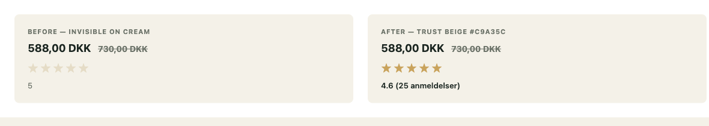
The "before" panel reproduces what shows on the live site today (M H., perfect-duo-bundle PDP, 2026-05-14): five faint stars on cream. The "after" panel applies trust beige #c9a35c for the filled stars, larger glyphs, and a readable review count next to them.
Where to apply. - PDP buy box review row (Component 03) - Product cards on home, collection pages - Judge.me reviews module headers - Cart line items (when a review badge appears) - Sticky mobile ATC bar (Component 04) - Email templates (Klaviyo flows for welcome, browse abandon, cart abandon, post purchase, replenishment, win back). Apply the same star treatment whenever stars render inside email.
Live reference. Maude's PDP shows what a high contrast star row looks like inside a quiet brand voice: getmaude.com/products/shine-silicone-lube.
P0 All EN PDPs + Home Mobile + Desktop
Purpose. Surface the highest chemical safety rating from the Danish Consumer Council on the English default site. Currently visible only on /da PDPs. 95% of paid Meta traffic lands on the English root and never sees this signal.
Mockup.
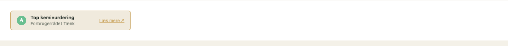
Live references. - Honey Pot uses a near identical clinical badge pattern next to the price: thehoneypot.co - YES anchors heavily on clinical badges: yesyesyes.org - Forbrugerrådet Tænk official A-kolbe mark: taenk.dk/test-og-forbrugerliv/a-kolber-paa-produkter-til-dig-og-din-familie
Specs.
#f0eadd cream OR #2d3d33 reversed on dark sections.#c9a35c trust beige, 6 px radius.#6abf91 alert green, white "A" centered (placeholder until Forbrugerrådet press kit mark is provided).#6b7268 gray.Acceptance criteria.
- Renders on every PDP regardless of locale.
- Tooltip is accessible (ARIA label, keyboard focusable).
- Source link opens in new tab with rel="noopener".
- Verify usage rights with Forbrugerrådet Tænk before launch.
P0 PDP buy box, home hero, menopause LP Mobile + Desktop
Purpose. Pin the strongest verbatim Danish review inside the hero, above the ATC. The corpus has 114 reviews; the M H. "liquid gold game changer" quote currently sits below the fold.
Mockup. Light variant (cream background) + Dark variant (deep green for menopause LP).
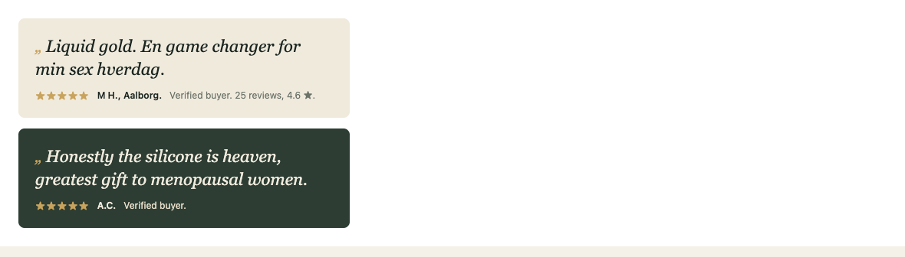
Live references. - Foria runs editorial pull quotes inside PDP hero: foriawellness.com/products/awaken-arousal-oil-cbd - Dame uses quiet quote cards directly above benefit bullets: dame.com/products/aloe-lube - Maude's quiet editorial review placement is the closest match to sitre's voice: getmaude.com/products/shine-silicone-lube
Specs.
#f0eadd cream. Variant D: #2d3d33 deep green.#c9a35c, 2 px gap. NEVER cream on cream.Acceptance criteria. - Quote must be 100% verbatim from the corpus (no editorial polish). - Attribution must include verified buyer flag from Judge.me. - Star count and total reviews must update dynamically from Judge.me feed.
P0 All PDPs Mobile first, scales up
Purpose. Consolidate every above-the-fold buy-box element into a single decision friendly stack. Resolves audit findings 1, 3, 4, 5, 8.
Mockup. Full PDP buy box, mobile 375 px width.
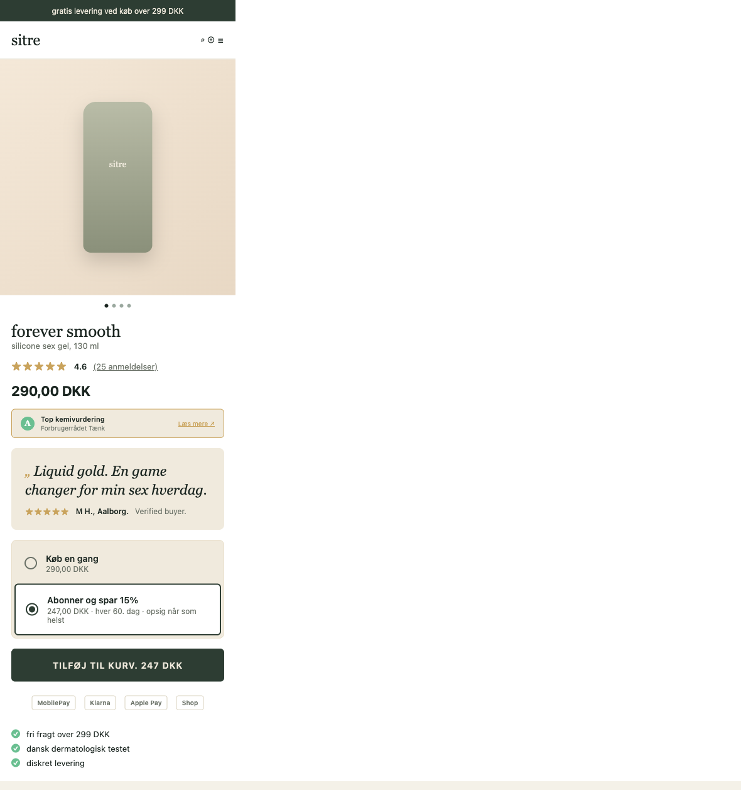
Live references. - Above fold buy box hierarchy: getmaude.com/products/shine-silicone-lube - Review count and density above price: foriawellness.com/products/awaken-arousal-oil-cbd - Subscribe toggle inline with price: dame.com/products/aloe-lube - Trust strip layout: thebloomi.com
Sitre current state (before).
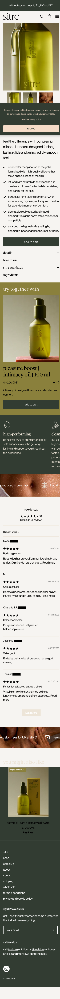
Specs (mobile, viewport 375 px).
#6b7268 gray, weight 400.#c9a35c (apply Section 3.0 contrast fix). 8 px gap, then "4.6" weight 600 in ink + "(25 anmeldelser)" weight 400 underlined. Tappable, jumps to #reviews anchor.#2d3d33, type cream, weight 600, 14 px caps. Active state: scale 0.98, shadow inset. Label uses the selected price (e.g. "Tilføj til kurv. 247 DKK" when subscribe is active).Acceptance criteria. - Fits within 1 viewport height on iPhone SE (667 px), iPhone 12+ (844 px), and Pixel 7 (915 px) so the CTA is visible without scrolling. - All Danish copy uses lowercase brand voice. - Subscribe radio defaults to one time on first variant, inherits user's last choice on revisit. - Image gallery preloads first 2 images, lazy loads remaining.
P1 All PDPs Mobile only
Purpose. Keep ATC reachable for users who scroll deep into reviews, ingredients, or FAQ. Standard mobile pattern for 90% mobile traffic; absent today.
Mockup.
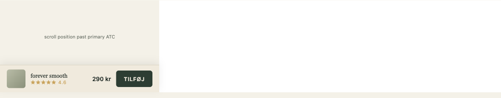
Live references. - Maude PDP: getmaude.com/products/shine-silicone-lube - Foria PDP: foriawellness.com/products/awaken-arousal-oil-cbd - Honey Pot mobile sticky bar: thehoneypot.co
Specs.
#f0eadd with subtle top shadow 0 -4px 12px rgba(0,0,0,0.06).Acceptance criteria.
- Does not overlap iOS bottom safe area (env(safe-area-inset-bottom)).
- Does not appear when cart drawer or modal is open.
- Tap on title scrolls to top of PDP. Tap on CTA fires ATC.
P0 Cart page + PDP buy box footer Mobile + Desktop
Purpose. Forever Smooth at 290 DKK sits exactly 9 DKK below the 299 DKK free shipping threshold. Currently no progress bar exists; the threshold is invisible.
Mockup. 2 states: under threshold + at threshold.
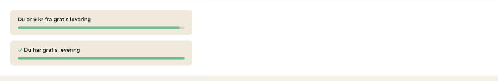
Live references. - Smile Makers: smilemakerscollection.com (cart shipping bar) - Bloomi: thebloomi.com - Honey Pot: thehoneypot.co
Specs.
#f0eadd. 6 px radius.#6abf91 alert green. 999 px radius.Acceptance criteria.
- Updates in real time as quantities change.
- Localized: Danish on /da, English on root, threshold pulled from Shopify shipping rules.
- Accessible: ARIA progressbar with aria-valuenow and aria-valuemax.
P0 /cart Mobile first
Purpose. Currently the mobile cart shows "Continue Shopping" above the product line and no checkout button above the fold. First paint after ATC is a back button suggestion. This is a checkout rate killer.
Mockup. Above-the-fold mobile cart, 1 item, 290 DKK (9 kr from free shipping).
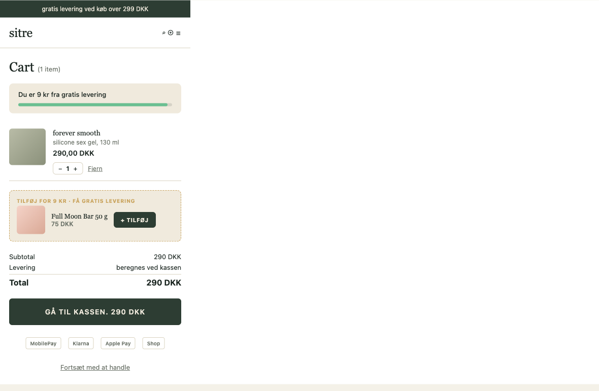
Live references. - Maude cart: getmaude.com/cart (add an item first) - Honey Pot cart pattern: thehoneypot.co - Dame cart with subscribe inclusion: dame.com
Sitre current state (before).
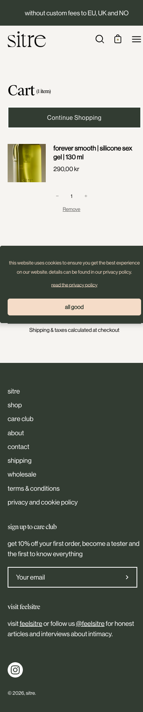
Specs.
Empty cart state. Replace current "Sign up for 10% off" CTA with: "Din kurv er tom. Mest købte denne uge:" then a 2-column grid of the top 4 SKUs.
Acceptance criteria. - Checkout CTA visible within first viewport on iPhone SE (375 × 667). - All Danish copy verified by a Danish copywriter before launch. - Express checkout wallets appear on Shopify's checkout step; static icon row appears here pre commit.
P2 Cart page only Mobile + Desktop
Purpose. Lift AOV by adding a low friction tile at the moment of commitment. Full Moon Bar 50 g at 75 DKK is the cheapest catalog item; ideal "round up to free shipping" upsell.
Live references. - Honey Pot cart upsell: thehoneypot.co - Dame "frequently added" cart tile: dame.com
Specs.
#f0eadd with 1 px dashed border in trust beige (signals "optional add").#c9a35c, weight 600. Copy dynamic: "Tilføj for 9 kr ekstra, få gratis levering" if shipping gap exists, else "Andre købte også".Logic. - Always pick the lowest price SKU not already in cart. - Skip rendering if cart contains a bundle. - Cap at 1 tile per cart view.
Acceptance criteria. - Add does not navigate away from the cart. - Removing line item also clears the cross sell suggestion until a refresh.
P1 PDP buy box + Cart page Mobile + Desktop
Purpose. Show MobilePay, Klarna, Apple Pay, and Shop Pay icons before checkout. MobilePay has 85%+ Danish wallet adoption; absence of pre checkout visual signal costs conversion.
Live references. - MobilePay official press kit: mobilepay.dk/erhverv/presse-og-medier - Klarna brand assets: klarna.com/no/forretningsledere - Bloomi payment row pattern: thebloomi.com - Smile Makers: smilemakerscollection.com
Specs.
#6b7268). NOT brand colors.Acceptance criteria. - Renders identically across browsers. - No JS dependency; pure HTML + inline SVG. - Hidden in markets where wallets are not supported (geo aware via Shopify locale).
P1 PDPs for consumables only Mobile + Desktop
Purpose. Sitre has no subscribe mechanic. Honey Pot runs 15% Subscribe & Save, Bloomi 20%. For a consumable category (lube, oil, soap), absence of subscription is a margin and LTV leak.
Live references. - Dame subscribe toggle on PDP: dame.com/products/aloe-lube - Honey Pot subscribe & save: thehoneypot.co - Bloomi 20% subscribe: thebloomi.com
Specs.
#e8dec9. 4 px internal padding.#6b7268 gray.Eligible SKUs. Pleasure Boost Oil 100 ml. Forever Smooth 130 ml. Forever Smooth 50 ml. Full Moon Bar. Optional: Body Melt.
Not eligible. Bundles, candles, accessories.
Acceptance criteria. - Recharge or Seal Subscriptions app installed. - Cancellation link visible in account portal within 1 click. - "Skip next shipment" available without canceling.
P1 Forever Smooth + Pleasure Boost solo PDPs Mobile + Desktop
Purpose. Perfect Duo Bundle PDP converts at ~14.6%, 4.7x the solo PDP. Cross sell the bundle inline with explicit savings math.
Mockup.
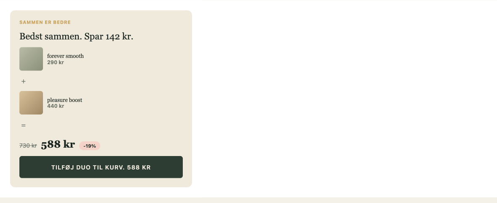
Live references. - Maude Ritual Builder pattern: getmaude.com - Foria "frequently bought together": foriawellness.com - Dame bundles: dame.com
Specs.
#f5d3c8 with ink type.Acceptance criteria.
- Hides on the Perfect Duo Bundle PDP (no self cross sell).
- Updates both Forever Smooth and Pleasure Boost PDPs via the same Liquid section.
- AOV attribution tracked via attribution_source = "duo_module" in cart attributes.
P1 All PDPs Mobile + Desktop
Purpose. Resolve the recurring objections the corpus surfaces. Silicone vs water based, condom and toy compatibility, IUD safety, scent, dryness fit.
Mockup. Opened state showing customer quote attribution.
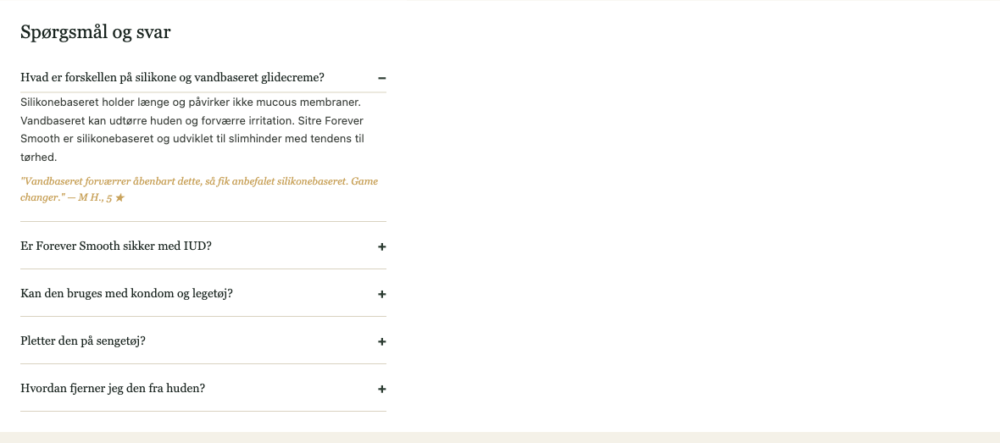
Live references. - Maude FAQ on PDP: getmaude.com/products/shine-silicone-lube - Foria full FAQ structure: foriawellness.com/products/awaken-arousal-oil-cbd - YES FAQ pattern with clinician backing: yesyesyes.org - Honey Pot Q&A blocks: thehoneypot.co
Specs.
#d9d2c0.#3a3f3a, line height 1.65.Full FAQ content per SKU (drafts, to be reviewed by Danish copywriter).
Forever Smooth (Silicone Gel 130 ml)
Hvad er forskellen på silikone og vandbaseret glidecreme? Silikonebaseret holder længe, påvirker ikke slimhinder, og kan med fordel bruges af kvinder med tørhed eller irritation ved indgangen. Vandbaseret kan udtørre huden og forværre irritation. Forever Smooth er silikonebaseret og udviklet til slimhinder med tendens til tørhed. Citat fra M H., 5★: "Vandbaseret forværrer åbenbart dette, så fik anbefalet silikonebaseret. Game changer."
Er Forever Smooth sikker med IUD og kobberspiral? Ja. Silikone har ingen kendte interaktioner med kobber eller plast i intrauterin spiral. Hvis du har spørgsmål, anbefaler vi at tale med din gynækolog.
Kan den bruges med kondom og legetøj? Sikker med latex og polyisopren kondomer. Vi anbefaler IKKE brug på rent silikone-legetøj, da silikone kan binde sig til silikone. På ABS, glas og metal legetøj er den helt sikker.
Pletter den på sengetøj? Silikone vasker af ved 40 grader. Vi anbefaler vask kort efter brug for bedst resultat. Lette pletter forsvinder typisk efter første vask.
Hvordan fjerner jeg den fra huden? Lunkent vand og en mild sæbe (vi anbefaler Full Moon Bar). Du behøver ikke skrubbe; silikone glider af ved vand og sæbe.
Er den vegansk? Ja. 100% vegansk, ingen animalske ingredienser, ikke testet på dyr.
Har Forever Smooth modtaget Forbrugerrådet Tænks A-kolbe? Ja. Den højeste kemivurdering fra Forbrugerrådet Tænk. Ingen problematiske stoffer ifølge dansk forbrugerlovgivning.
Pleasure Boost (Intimacy Oil 100 ml with 2% CBD)
Hvad gør CBD i Pleasure Boost? 2% CBD optages i blodbanen via slimhinderne og kan øge følsomhed og afslappe musklerne i området. Effekten indtræder typisk efter 5 til 25 minutter. Bemærk: Pleasure Boost er ikke et lægemiddel og erstatter ikke medicinsk rådgivning.
Kan den bruges med kondom? Nej, ikke med latex kondomer. Olien kan svække latex. Hvis du bruger kondom, anbefaler vi Forever Smooth silikone gel i stedet.
Er det lovligt at have CBD i intim olie i Danmark? Ja. Pleasure Boost overholder dansk og EU regulering for kosmetisk anvendelse af CBD. Indholdet er under den tilladte THC tærskel.
Kan jeg bruge den som massage olie? Ja. Mange kunder bruger den som krops og massage olie. Den absorberes langsomt og efterlader huden blød.
Hvad gør jeg, hvis jeg ikke kan mærke en effekt? Effekten varierer. Vi anbefaler at give den 25 minutter første gang. Brug rigeligt, masser ind, og lad den arbejde uden afbrydelse.
Perfect Duo Bundle
Hvordan bruger jeg de to produkter sammen? Start med Pleasure Boost olie. Masser ind under forspil, vent 5 til 15 minutter. Læg derefter Forever Smooth silikone gel over for langvarig glide og komfort. Olien aktiverer, gelen vedligeholder.
Hvor meget sparer jeg ved at købe bundle? Du sparer 142 kr (19%) sammenlignet med at købe produkterne enkeltvis.
Kan jeg bytte til andre produkter i bundle? Bundlen er sammensat for at virke sammen. Hvis du foretrækker andre kombinationer, anbefaler vi vores Date of Touch eller Explore bundles.
Full Moon Bar
Kan sæben bruges over hele kroppen? Ja. Mange kunder bruger den dagligt som kropssæbe. Citat fra Julie, 5★: "Jeg bruger sæben over hele kroppen. Duften gør mig i så godt humør."
Hvad dufter sæben af? Subtil duft af ylang ylang og rosenroller. Ingen syntetisk parfume.
Er den pH-balanceret til intim brug? Ja. pH 5.5, samme som hudens naturlige pH. Sikker til daglig intim hygiejne.
Acceptance criteria.
- Schema.org FAQPage markup for SEO. Each Q&A as Question + Answer entity.
- Defaults to all closed on mobile, first one open on desktop.
- Tap counts logged to GA4 as pdp_faq_open with question label.
P1 Site wide popup Mobile + Desktop
Purpose. Raise first order offer from 10% to 15% with 350 DKK minimum threshold to protect AOV.
Mockup.
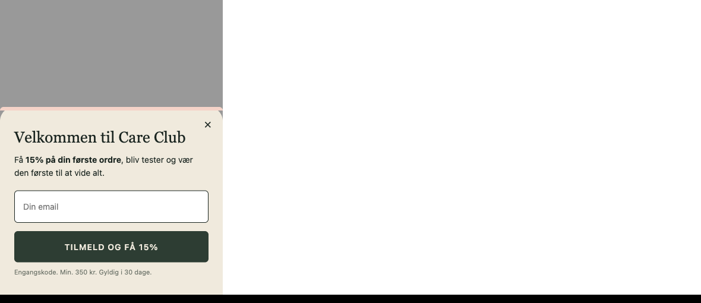
Live references. - Smile Makers 15% email popup: smilemakerscollection.com - Honey Pot 15% popup: thehoneypot.co - Foria sitewide promo popup: foriawellness.com
Specs.
#f0eadd with a soft pink #f5d3c8 accent bar at the top of the bottom sheet.Variant for A/B test. Run 3 cells: A) 10% control, B) 15% no min, C) 15% with 350 DKK min.
Acceptance criteria. - Klaviyo form ID maps to "care_club_15off" segment. - Code is single use, 30 day expiry, 350 DKK minimum, no stacking with bundle discount. - Mobile bottom sheet does not block native scroll.
P1 strategic New page: /pages/intim-toerhed-og-overgangsalder Mobile + Desktop
Purpose. Own a category gap. Kindra and YES anchor menopause positive intimacy in English; no Danish brand owns it in Danish. Sitre has 10 corpus reviews directly referencing tørhed and irritation.
Live references. - Kindra (menopause led, closest analog to tone): ourkindra.com - YES (NHS endorsed, clinical credibility framing): yesyesyes.org - Foria menopause / dryness page: foriawellness.com/blogs/learn/menopause
Page structure (top to bottom).
| # | Section | Anchor copy (Danish) | Component reuse |
|---|---|---|---|
| 1 | Eyebrow strip | "For kvinder over 40. Og deres partner." | New |
| 2 | Hero | H1 "Intim tørhed handler ikke om alder. Det handler om den rigtige formulering." Hero image: editorial portrait. CTA: "Find min løsning". | C02 quote card pinned right |
| 3 | Pharmacy contrast section | H2 "Ikke en glidecreme. En lettelse." Nina-Simone pharmacy quote in full. | C02 quote card dark variant |
| 4 | Trust strip | A-kolbe + dermatologisk testet + vegansk + parfume fri | C01 + custom row |
| 5 | 3 benefit blocks | (a) Stopper irritation ved indgangen. (b) Holder længe uden klistret rest. (c) Du kan bruge den dagligt. | C02 quote card mini |
| 6 | Product block | Forever Smooth gel + Pleasure Boost oil cards. Tertiary CTA to Perfect Duo Bundle. | C10 compact variant |
| 7 | Clinician anchor (placeholder) | [Dr. Navn], gynækolog, København. |
New (cv card) |
| 8 | FAQ | 5 menopause specific questions in Danish | C11 FAQ accordion |
| 9 | Editorial cross link | "Læs mere på feelsitre.com" | Reused homepage block |
| 10 | CTA band | Background deep green. "Du fortjener at have det godt. Hver dag." | New, full bleed |
| 11 | Footer | Inherits global | Reused |
Visual direction. Editorial portrait photography. 45 to 55 year old Danish woman, soft natural light, cream linen, warm green plants. NOT clinical photography. Bridge image: hands holding a sitre bottle next to a coffee cup on a wooden table.
Required assets. 1 hero portrait (1600 × 1100 px desktop, 800 × 900 px mobile). 1 lifestyle bridge image. 3 benefit block icons (24 px outlined SVG). 1 clinician headshot placeholder (560 × 560 px).
Acceptance criteria. - Page weight under 200 KB total assets. - LCP under 2.5 s on 4G. - Schema markup: WebPage + FAQPage + linked Product items. - Internal links: header eyebrow row "guide: intim tørhed" links here; footer column "for hvem" lists this page.
P1 All PDPs (below buy box) Mobile + Desktop
Purpose. The current PDP shows ingredients as an accordion list (INCI names only). Customers in the corpus repeatedly mention "huden" (skin) and "slimhinder" (mucous membranes) as concerns. An A+ Content block frames each ingredient with what it does, why it's there, and one verbatim review where appropriate. Builds trust without being clinical.
Mockup.
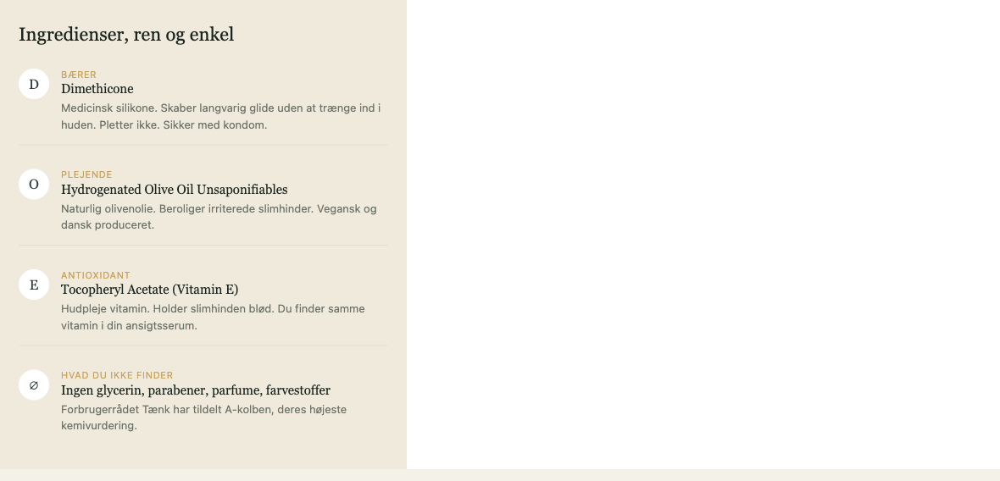
Live references. - Maude ingredients section with role + benefit: getmaude.com/products/shine-silicone-lube - Honey Pot "what's in it / what's NOT in it": thehoneypot.co - Foria full ingredient breakdown with rationale: foriawellness.com/products/awaken-arousal-oil-cbd - Beautycounter "the never list" pattern: beautycounter.com - Dame ingredients block: dame.com/products/aloe-lube
Anatomy. Each ingredient is one row.
For each ingredient: icon (single letter or outlined SVG) + role label (caps eyebrow) + INCI name + 1-sentence "why it's there" written in plain Danish.
Final row is intentional: "What you do NOT find". Lists parabens, glycerin, parfume, farvestoffer, all crossed out.
Specs.
#e8dec9 (last row no border).#6b7268, line height 1.5.Content per SKU.
Forever Smooth. | Role | INCI | Why | |---|---|---| | Bærer | Dimethicone | Medicinsk silikone. Langvarig glide. Pletter ikke. | | Plejende | Hydrogenated Olive Oil Unsaponifiables | Naturlig olivenolie. Beroliger slimhinder. Vegansk. | | Plejende | Hydrogenated Ethylhexyl Olivate | Olivenolie afledt. Blødgør. | | Antioxidant | Tocopheryl Acetate (Vitamin E) | Holder slimhinden blød. Samme vitamin som i din ansigtsserum. | | Ikke i den | Glycerin, parabener, parfume, farvestoffer | Forbrugerrådet Tænk A-kolbe godkendt. |
Pleasure Boost. | Role | INCI | Why | |---|---|---| | Bærer | Caprylic/Capric Triglyceride | Let kokosolie afledt. Glider på huden. | | Aktiv ingrediens | Cannabidiol (CBD) 2% | Optages via slimhinden. Øger følsomhed inden for 5 til 25 minutter. | | Plejende | Squalane | Plante baseret. Beroliger irriteret hud. | | Duft | Naturlig æterisk olie | Subtil duft, ikke syntetisk parfume. | | Ikke i den | Parabener, mineralolier, syntetisk parfume, THC over EU grænse | |
Full Moon Bar. | Role | INCI | Why | |---|---|---| | Sæbe base | Sodium Olivate | Olivenolie sæbe. pH 5.5. | | Plejende | Shea Butter | Naturligt fugtighedsbevarende. | | Duft | Ylang Ylang Essential Oil | Subtil blomster duft. | | Ikke i den | Sulfat, parabener, syntetisk parfume | |
Acceptance criteria.
- Schema.org markup: extends the Product entity with additionalProperty for each ingredient (helpful for SEO and AI search).
- Mobile: all rows stack vertically. Desktop: optional 2-column layout for shorter ingredient lists.
- Tone is informative, not clinical. Plain Danish, not chemistry textbook.
P1 All PDPs (below ingredients) Mobile + Desktop
Purpose. First time buyers (especially silicone first timers) need to know "how much, where, in what order". The corpus shows 2 reviewers explicitly identifying as first time silicone users ("det er første gang med en silicone gel"). A simple step block removes the "am I doing this right" hesitation.
Mockup.
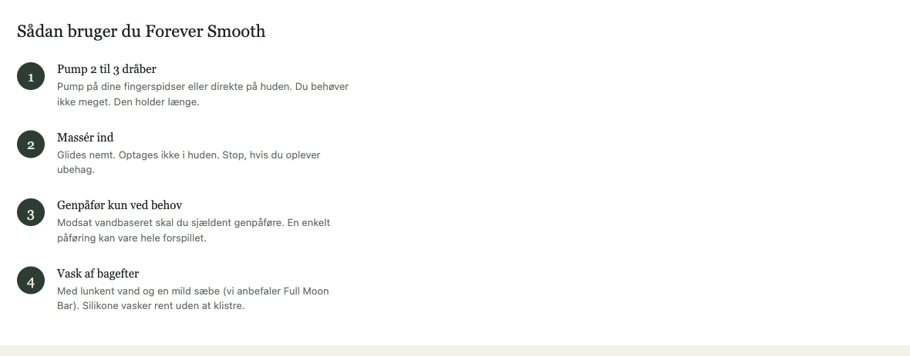
Live references. - Maude PDP "how to use" steps: getmaude.com/products/shine-silicone-lube - Foria step block with photography: foriawellness.com/products/awaken-arousal-oil-cbd - Honey Pot "how to use" pattern: thehoneypot.co - Bloomi step diagram: thebloomi.com
Specs.
Content per SKU.
Forever Smooth. 1. Pump 2 til 3 dråber på dine fingerspidser eller direkte på huden. 2. Massér ind. Glides nemt. Optages ikke i huden. 3. Genpåfør kun ved behov. Modsat vandbaseret holder den længe. 4. Vask af bagefter med lunkent vand og en mild sæbe (vi anbefaler Full Moon Bar).
Pleasure Boost. 1. Pump 5 til 10 dråber i håndfladen. 2. Massér ind på de ønskede områder. Lad den arbejde 5 til 25 minutter. 3. Brug alene eller læg Forever Smooth oven på for langvarig glide. 4. Husk: ikke kombinerbar med latex kondomer.
Perfect Duo Bundle. 1. Start med Pleasure Boost olie. Massér ind under forspil. 2. Vent 5 til 15 minutter, så CBD aktiverer. 3. Læg Forever Smooth gel over for langvarig glide. 4. Vask af bagefter, eller lad det blive på huden hvis du foretrækker det.
Optional enhancement. Add a small illustration (line drawing, 80 × 80 px per step) showing each step visually. Outsource to an illustrator who can match the brand's quiet aesthetic. NOT photography, NOT emoji.
Acceptance criteria. - Numbered steps render as ordered list semantically (for SEO and accessibility). - Step count is 3 to 5 per SKU. More than 5 becomes daunting. - Voice is permissive, not directive ("vi anbefaler" vs "du skal").
| Pattern | Brand | URL |
|---|---|---|
| PDP buy box hierarchy | Maude | getmaude.com/products/shine-silicone-lube |
| Review volume in hero | Foria | foriawellness.com/products/awaken-arousal-oil-cbd |
| Subscribe toggle on PDP | Dame | dame.com/products/aloe-lube |
| Menopause LP voice | Kindra | ourkindra.com |
| Clinical credibility | YES | yesyesyes.org |
| Subscribe & Save mechanic | Honey Pot | thehoneypot.co |
| Quiz / personalization | Smile Makers | smilemakerscollection.com |
| Ritual Builder / bundle | Maude home | getmaude.com |
| Ingredients breakdown | Maude / Foria / Honey Pot | (see Component 14) |
| How to use steps | Maude / Foria / Bloomi | (see Component 15) |
| Danish Trustpilot anchor | Peech | peech.dk |
| Danish wallet (MobilePay) | Sinful | sinful.dk |
| Gate | Owner | Output |
|---|---|---|
| Brand voice check | sitre founders or brand lead | Sign off on lowercase voice + Danish copy across components |
| Photography commission | sitre + photographer | Shot list for PDP in context + menopause LP |
| Component review | Bhaskar Roy (CRO) + designer | Figma walk through; one round of revision |
| Dev handoff | Designer + developer | Component level Figma annotations, spacing rules, edge cases |
| Pre launch QA | Bhaskar Roy | Audit each component against the spec table |
| Post launch review | Bhaskar Roy + sitre team | 14 day post launch metrics review |